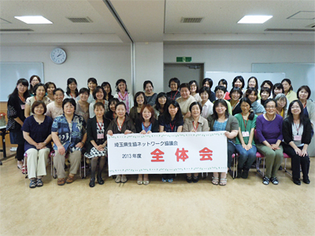

- 【日 時】
- 6月25日（火）10時30分～14時00分
- 【場 所】
- コープみらい コーププラザ浦和 3階会議室
- 【出席者】
- 62人

■全体会（第1回協議会）
- 埼玉県生協連 岩岡会長理事より、2013年度の体制（5月16日の埼玉県生協連理事会で滝澤玲子さんが会長に推薦されたこと）の報告と、埼玉県内・全国の消費者団体・NPO法人、全国の生協が支えている消費者団体、組合員と生協をめぐる状況等についてお話をいただきました。
- 滝澤会長より「皆さんが地域や、所属されている団体での出会い、ご縁と活動を大切にされ、1年間よろしくお願いいたします。」と挨拶がありました。
- 協議会メンバーの自己紹介（マイブームを発表）を行いました。韓流ドラマ、バレーボール、ガーデニングとたいへんバラエティに富んだ発表で、前半の講演も生かされ一人20秒の紹介時間のなかで楽しく印象に残る紹介となりました。
- 事務局より2012年度の活動のまとめと会計の報告を行いました。
- 滝澤会長より、総合テーマ「広く地域の中でつながりあうために」は引き続きテーマとし、学習や交流活動をしていくことが提案され確認されました。活動日程、埼玉県ドリームフェスタの参加、JA女性協との交流会、各生協のイベントやフェスタ等の案内、お願いとして出欠席の連絡は確実に、2013年度の財源について説明を行いました。
- 係の説明を行い、委員を確認しました。
- 第58回 埼玉母親大会の報告と、第59回 日本母親大会、埼玉県消費者大会第2回プレ学習会のお知らせをしました。
- 事務局より、年間の参加にあたり、お願い事項などの説明を行いました。
- 滝澤会長より今回で卒業されるメンバーが紹介されました。
昼食時に、埼玉県原爆死没者慰霊式(7月28日)への折鶴を全員でおりました。
|